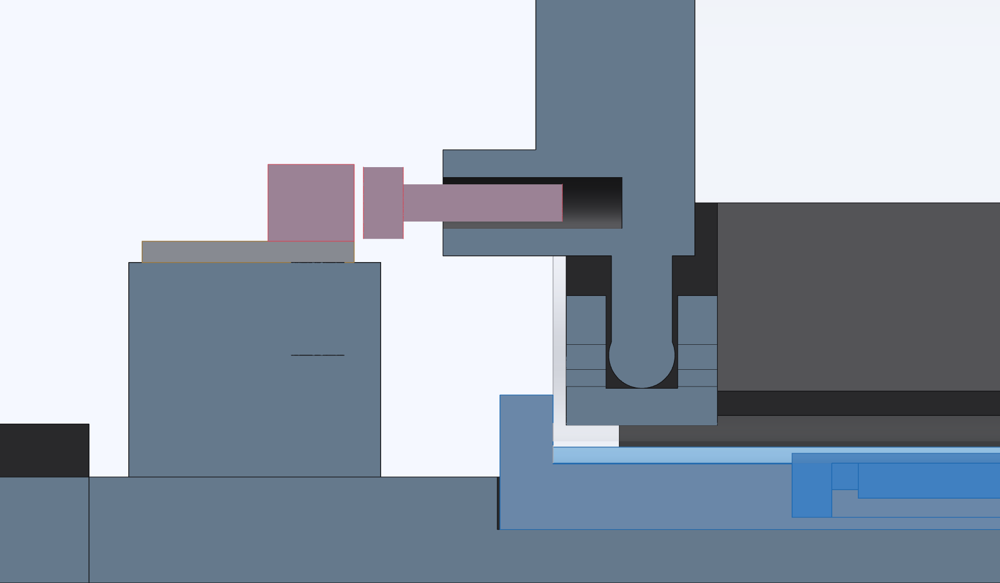

Set the striker at the tab
The tab locates the tube rim. Set the switch to trip before the sled's leading face reaches that same stop.

- Leave the motor unpowered. Hold a bank card between the sled's leading face and the comb tab. Turn the coupling by hand until the sled just grips the card.
- Back the striker screw out toward the switch until the lever clicks. Draw the card out.
- Move the sled in until the switch releases, then bring it back slowly. Stop as soon as it clicks.
Check the gap at the click
There is a card's thickness between the sled and the tab at the click. The switch releases as the sled moves into the tube and clicks at the same point on return.